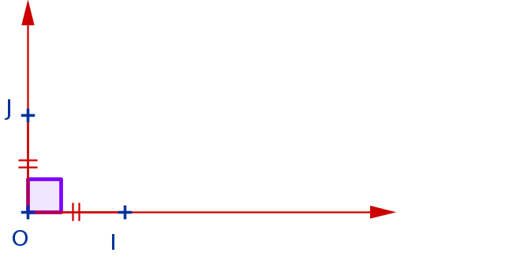
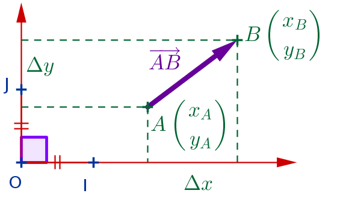

Descartes (XVII) : transformer les problèmes géométriques en problèmes de calcul ;
Grassmann (XIX) : «produit linéaire» (produit scalaire) issu d'un travail sur les marées.
Dans ce chapitre, on travaille dans des repères orthonormés :

orthogonal : \((OI)\perp(OJ)\) et normé : \(OI=OJ=1\)
Outils et rappels
Coordonnées de \(\overrightarrow{AB}={{x_B-x_A}\choose{y_B-y_A}}={{\Delta
x}\choose{\Delta y}}\)
On appelle norme de \(\overrightarrow{u}=\overrightarrow{AB}\) la distance
entre l'origine et l'extrémité du vecteur, donnée par :
\(\displaystyle||\overrightarrow{u}||=\sqrt{(x_B-x_A)^2+(y_B-y_A)^2}=\sqrt{\Delta x^2 +
\Delta y^2}\)

Si \(k\) est un réel, \(||k\overrightarrow{u}||=|k|\,||\overrightarrow{u}||\)
Somme et produit par un réel :
Si \(k\) et un nombre et \(\overrightarrow{u}={{x}\choose{y}}\) et \(\overrightarrow{v}={{x'}\choose{y'}}\) sont
deux vecteurs :
\(\displaystyle k\overrightarrow{u}\left(\begin{array}{c}
kx \\ ky \end{array}\right)\) et
\(\overrightarrow{u}+\overrightarrow{v}\left(\begin{array}{c}
x+x' \\ y+y' \end{array}\right)\)
Si \(A\left(\begin{array}{ccc}x_A & y_A\end{array}\right)\) et
\(\overrightarrow{u}\left(\begin{array}{c} x_{\overrightarrow{u}} \\ y_{\overrightarrow{u}}
\\\end{array}\right)\)
sont un point et un vecteur du plan,
alors on dit que le point \(C\) est l'image de \(A\) par la translation de vecteur
\(\overrightarrow{u}\)
lorsque \(\overrightarrow{AC}=\overrightarrow{u}\), donc
\(C\left(\begin{array}{cc}x_A+x_{\overrightarrow{u}} & y_A+y_{\overrightarrow{u}} \end{array}\right)\).
Relation de Chasles :
Si \(A\), \(B\) et \(C\) sont trois points quelconques, alors :
Projections : rappels
Lorsque \(\overrightarrow{u}\) fait un angle \(\alpha\) avec l'axe des abscisses, on a :
\(\displaystyle\overrightarrow{u}=\left(\begin{array}{c} ||\overrightarrow{u}||\cos\alpha \\
||\overrightarrow{u}||\sin\alpha \\ \end{array}\right)\)
\(\overrightarrow{u}\) est un vecteur de norme \(5\) et fait un angle de \(30^\circ\) avec l'axe
horizontal. Calculer ses coordonnées.
\(\overrightarrow{u}={{x}\choose{y}}\) et \(\overrightarrow{v}={{x'}\choose{y'}}\) sont deux
vecteurs non nuls. On passe du vecteur \(\overrightarrow{u}\) au vecteur \(\overrightarrow{v}\) en tournant d'un
angle \(\alpha\).
Le déterminant de ces deux vecteurs est un nombre pouvant se calculer de deux manères :
à partir des coordonnées \(\displaystyle\det\left(\overrightarrow{u};\overrightarrow{v}\right)=\det\left({{x}\choose{y}};{{x'}\choose{y'}}\right)=
xy'-yx'\) ;
à partir des normes et de l'angle : \(\displaystyle\det\left(\overrightarrow{u};\overrightarrow{v}\right)=||\overrightarrow{u}||
||\overrightarrow{v}|| \sin\alpha\) ;
\(\overrightarrow{u}={{x}\choose{y}}\) et \(\overrightarrow{v}={{x'}\choose{y'}}\) sont
colinéaires (noté \(\overrightarrow{u}//\overrightarrow{v}\), c'est à dire qu'ils ont même
direction (mais pas forcément de même sens)) lorsque (les conditions suivantes sont équivalentes):
Il existe un réel \(k\) (appelé coefficient de colinéarité) tel que
\(\overrightarrow{u}=k\overrightarrow{v}\) ou \(\overrightarrow{v}=k\overrightarrow{u}\).
les produits en croix sont égaux dans le tableau \(\begin{array}{|c|c|}\hline x & x' \\ \hline y & y' \\
\hline \end{array}\), c'est à dire que les coordonnées des deux vecteurs sont proportionnelles
L'angle entre \(\overrightarrow{u}\) et \(\overrightarrow{v}\) est de 0° ou 180°.
On donne \(\overrightarrow{u}={{-2}\choose{3}}\) et \(\overrightarrow{v}={{4}\choose{-6}}\).
Démontrer que ces vecteurs sont colinéaires et donner leur coefficient de colinéarité.
\(\overrightarrow{v} = -2\overrightarrow{u}\)
Trois points \(A\), \(B\) et \(C\) du plan sont alignés lorsque \(\overrightarrow{AB}\) et \(\overrightarrow{AC}\)
sont colinéaires.
Le déterminant de deux vecteurs \(\overrightarrow{u}\) et \(\overrightarrow{v}\) correspond à l'aire du
parallélogramme dont deux côtés sont \(\overrightarrow{u}\) et \(\overrightarrow{v}\) (tracés avec la même origine)
; l'aire est comptée négativement si l'on passe de \(\overrightarrow{u}\) à \(\overrightarrow{v}\) en tournant dans
le sens indirect.
Dans un repère orthonormé, on a \(\overrightarrow{u}=\left(\begin{array}{c} 3 \\ -2 \\ \end{array}\right)\) et
\(\overrightarrow{v}=\left(\begin{array}{c} 0{,}7 \\ 2{,}4 \\ \end{array}\right)\) ; tracer les deux vecteurs à
partir de l'origine d'un repère orthonormé ; calculer leur déterminant et en déduire l'angle entre ces deux
vecteurs.
On a \(||\overrightarrow{u}||=\sqrt{13}\) et \(||\overrightarrow{v}||=2{,}5\) ;
de plus \(\det\left(\overrightarrow{u}, \overrightarrow{v}\right) = 8{,}6\). Ainsi on sait que \(\sin\alpha =
\dfrac{8{,}6}{2{,}5\sqrt{13}}\) et on en déduit que l'angle qui permet de passer de \(\overrightarrow{u}\) à
\(\overrightarrow{v}\) est de 72,6° environ.
Produit scalaire et applications
Définitions et propriétés fondamentales
\(\overrightarrow{u}={{x}\choose{y}}\) et \(\overrightarrow{v}={{x'}\choose{y'}}\) sont deux
vecteurs non nuls. On passe du vecteur \(\overrightarrow{u}\) au vecteur \(\overrightarrow{v}\) en tournant d'un
angle \(\alpha=\widehat{\left(\overrightarrow{u};\overrightarrow{v}\right)}\).
Le produit scalaire de ces deux vecteurs est un nombre noté
\(\displaystyle\overrightarrow{u}\cdot\overrightarrow{v}\) et pouvant se calculer de deux manères :
à partir des coordonnées \(\overrightarrow{u}\cdot\overrightarrow{v}={{x}\choose{y}}\cdot{{x'}\choose{y'}} =
xx'+yy'\) ;
à partir des normes et de l'angle : \(\overrightarrow{u}\cdot\overrightarrow{v}=||\overrightarrow{u}|| ||\overrightarrow{v}||
\cos\alpha\) ;
Nullité du produit scalaire = orthogonalité \(\displaystyle\overrightarrow{u}\cdot\overrightarrow{v}=0~\Leftrightarrow~\overrightarrow{u}\perp\overrightarrow{v}\)
Symétrie :
Pour tous vecteurs \(\overrightarrow{u}\) et \(\overrightarrow{v}\) :
\(\displaystyle\overrightarrow{u}\cdot\overrightarrow{v}=\overrightarrow{v}\cdot\overrightarrow{u}\)
Déterminer les couples de vecteurs orthogonaux :
\(\overrightarrow{u}={{-3}\choose{-9}} ; \overrightarrow{v}={{3}\choose{-1}} ; \overrightarrow{w}={{9}\choose{3}}\)
\(\overrightarrow{u}\perp\overrightarrow{v}\)
Deux vecteurs de normes \(2\) et \(3\) font un angle de \(\dfrac{\pi}{3}\).
Calculer leur produit scalaire.
Deux vecteurs de normes \(2\) et \(3\) ont un produit scalaire de \(-3\).
Calculer la mesure de l'angle géométrique entre ces deux vecteurs et dessiner deux configurations possibles.
on a alors \(\cos\alpha = \dfrac{-3}{2\times3}=-0{,}5\), donc \(\alpha \equiv \pm\frac{2\pi}{3} \pmod{2\pi}\)
⭐ Démontrer que deux droites sont perpendiculaires lorsque le produit de leurs coefficients
directeurs vaut \(-1\).
Produit scalaire de deux vecteurs colinéaires :
Lorsque \(\overrightarrow{u}\) et \(\overrightarrow{u}\) sont colinéaires :
s'ils ont même sens, alors
\(\overrightarrow{u}\cdot\overrightarrow{v}=\|\overrightarrow{u}\||\overrightarrow{v}\|\) ;
s'ils sont de sens opposés, alors
\(\overrightarrow{u}\cdot\overrightarrow{v}=-\|\overrightarrow{u}\||\overrightarrow{v}\|\).
En effet, deux vecteurs colinaires de même sens font un angle de mesure \(0\), dont le \(\cos\) vaut \(1\). S'ils
sont de sens opposés, ils font un angle de \(\pi\), dont le \(\cos\) est \(-1\).
Signe du produit scalaire et interprétation physique
Lorsqu'un objet \(M\) soumis à plusieurs forces effectue un déplacement rectiligne (en mètres)
\(\overrightarrow{v}\neq\overrightarrow{0}\), la contribution énergétique, en Joules, de la force
\(\overrightarrow{u}\neq\overrightarrow{0}\) (exprimée en Newtons) à ce déplacement est donnée par
\(\overrightarrow{u}\cdot\overrightarrow{v}\). On appelle cette énergie le travail de
\(\overrightarrow{u}\) selon \(\overrightarrow{v}\).
Les mesures d'angles sont à \(2\pi\) près :
si \(\dfrac{-\pi}{2}<\widehat{\left(\overrightarrow{u},\overrightarrow{v}\right)}<\dfrac{\pi}{2}\) alors
\(\overrightarrow{u}\cdot\overrightarrow{v}>0\) ;
on dit que la force \(\overrightarrow{u}\) produit un travail moteur : elle contribue au mouvement.
si \(\widehat{\left(\overrightarrow{u},\overrightarrow{v}\right)}=\pm\dfrac{\pi}{2}\) alors
\(\overrightarrow{u}\cdot\overrightarrow{v}=0\) ;
la force \(\overrightarrow{u}\) ne produit aucun travail : elle ne contribue pas au mouvement.
si \(\dfrac{\pi}{2}
<\widehat{\left(\overrightarrow{u},\overrightarrow{v}\right)}<\dfrac{3\pi}{2}\) alors
\(\overrightarrow{u}\cdot\overrightarrow{v}<0\) ;
on dit que la force \(\overrightarrow{u}\) produit un travail résistif : elle résiste au mouvement.
⭐ Un objet roule sur un plan incliné à 45°, entraîné seulement par son poids (Énergie cinétique :
\(E_c=\frac{1}{2}mv^2\).
Sur quelle longueur doit-il rouler pour atteindre une vitesse de \(2\) m/s ?
Calcul vectoriel et produit scalaire
soit \(\overrightarrow{u}={{x}\choose{y}}\), \(\overrightarrow{v}={{x'}\choose{y'}}\), \(\overrightarrow{w} =
{{x''}\choose{y''}}\) trois vecteurs et \(k\) un nombre réel.
On a :
Le produit scalaire est donc distributif sur l'addition de vecteurs. Il est donc possible de calculer avec les
vecteurs de la même manière qu'avec des nombres, à l'exception du fait qu'un produit scalaire n'a que deux facteurs.
On peut donc utiliser des identités remarquables.
Théorème d'Al-Kashi
Ce théorème, d'un grand mathématicien perse, lie les longueurs des côtés d'un triangle à ses angles.
Soit \(MAB\) un triangle quelconque. Alors :
\(AB^2 = AM^2 + MB^2 - 2AM\times MB\times\cos\widehat{M}\)
Démontrer ce théorème en développant \(AB^2 = \overrightarrow{AB}^2 =
\left(\overrightarrow{AM}+\overrightarrow{MB}\right)^2\) (attention :
\(\overrightarrow{AM}\cdot\overrightarrow{MB}=\ldots?\ldots\overrightarrow{MA}\cdot\overrightarrow{MB}\) )
Un triangle a des côtés de 3 et 4 cm qui forment un angle de \(\frac{\pi}{3}\).
Calculer la longueur de son troisième côté.
Un triangle a des côtés de 10, 8 et 5 cm.
Donner les angles de ce triangle au degré près.